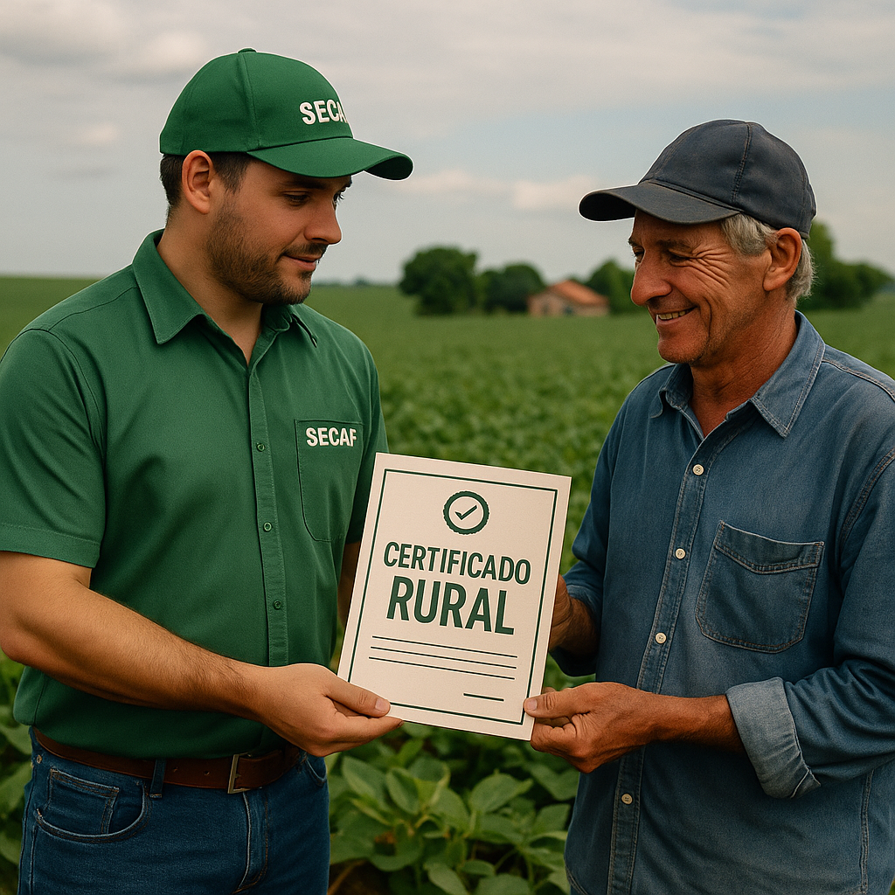

Certificados e Reconhecimentos
A SECAF orgulha-se de seu compromisso com a excelência no atendimento às demandas da agricultura familiar. Ao longo dos anos, acumulamos certificações e reconhecimentos que refletem nossa dedicação, competência técnica e integridade nos serviços prestados.
Certificações Técnicas
- Registro no CREA: Nossa equipe técnica é devidamente registrada no Conselho Regional de Engenharia e Agronomia, garantindo conformidade legal e qualidade dos projetos executados.
- ARTs (Anotações de Responsabilidade Técnica): Todos os projetos elaborados pela SECAF são acompanhados de ART, assegurando a responsabilidade técnica do profissional habilitado.
- Capacitações e cursos de atualização: Nossa equipe participa periodicamente de cursos e treinamentos oferecidos por instituições como SENAR, EMBRAPA, INCRA, e universidades.
Reconhecimentos e Parcerias
- Parceria com Prefeituras Municipais: A SECAF possui convênios com diversas prefeituras para elaboração de projetos técnicos em chamadas públicas, assistência técnica e planejamento territorial.
- Atuação aprovada junto ao Banco do Brasil, Caixa Econômica e demais instituições financeiras: Projetos financiáveis elaborados com aprovação e histórico de sucesso.
- Reconhecimento do MDA e INCRA: Participação ativa em programas como PNCF (Plano Nacional de Crédito Fundiário), com excelente índice de aprovação técnica.
Prêmios Locais
- Reconhecimento em Câmaras Municipais pelo serviço prestado à agricultura familiar.
- Premiações em feiras e eventos agrícolas por boas práticas de desenvolvimento sustentável.
Esses reconhecimentos são fruto do esforço contínuo em oferecer serviços com ética, competência e comprometimento social. Continuamos avançando para transformar o campo com responsabilidade e inovação.